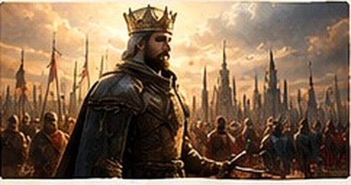
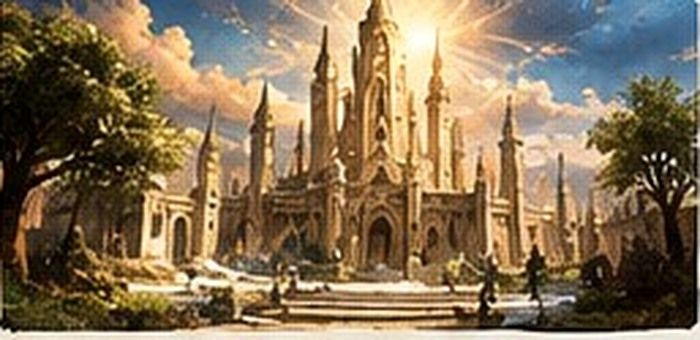
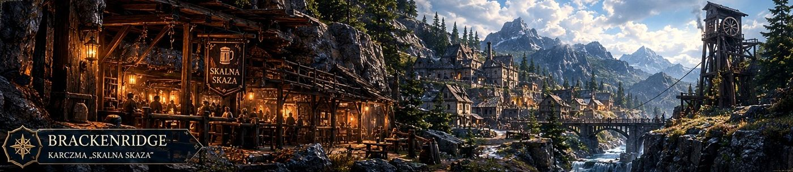
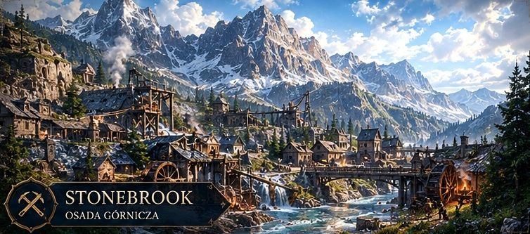
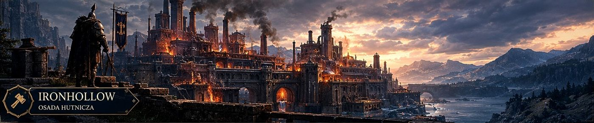
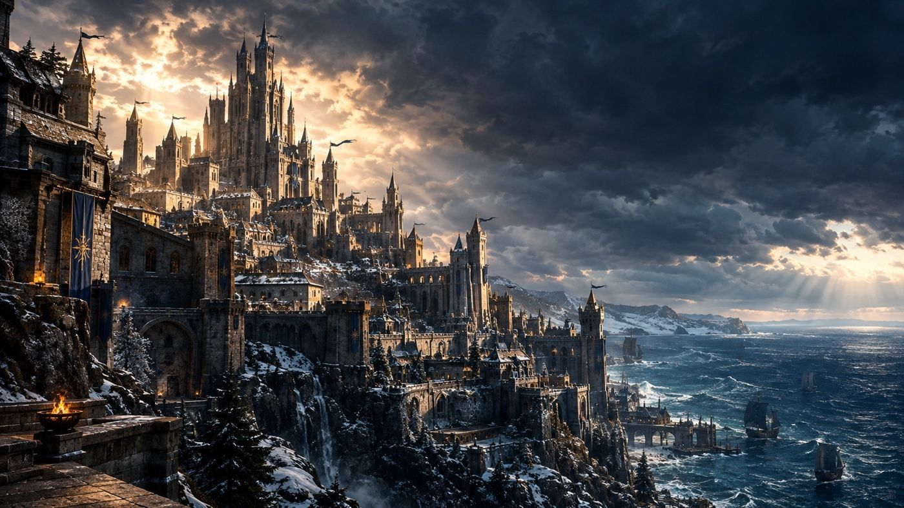
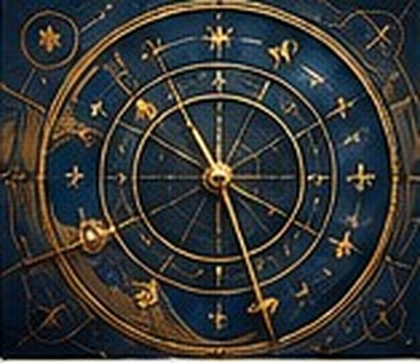

Stonegard
☼ Stonegard Miasto mocy, porządku i wiary „W Stonegardzie nie ma miejsca na słabość. Tu każdy ma swoje miejsce - i każdy zna swoje obowiązki.”
Stonegard to potężne miasto położone na wschodnich wybrzeżach Atlamaru. Miasto zostało częściowo wykuta w skale i wznosi się nad Oceanem Srebrnych Fal. Miasto słynie z surowego klimatu, silnej armii oraz rygorystycznej władzy królewskiej.
„W Stonegardzie nie ma miejsca na słabość. Tu każdy ma swoje miejsce - i każdy zna swoje obowiązki.”
❖Informacje ogólne
Stonegard to potężne miasto położone na wschodnich wybrzeżach Atlamaru. Miasto zostało częściowo wykuta w skale i wznosi się nad Oceanem Srebrnych Fal. Miasto słynie z surowego klimatu, silnej armii oraz rygorystycznej władzy królewskiej.
Mieszkańcy Stonegardu cenią pracowitość, lojalność wobec korony i bezpieczeństwo. Miasto i jego okolice są dobrze chronione, co sprawia, że w granicach miasta panuje względny spokój i stabilność - przynajmniej na pierwszy rzut oka.
⌛Historia

Korona i armia od pokoleń wyznaczają rytm życia miasta.
Stonegard przez wieki był kluczowym punktem strategicznym i handlowym na wschodnich wybrzeżach Atlamaru. Ród królewski budował tu swoje miasto na fundamencie wojskowej siły, religijnej wiary i surowej dyscypliny.
Obecny król, Aldren Varkas , objął tron po wcześniejszych konfliktach wewnętrznych. Jego rządy przyniosły względną stabilność, ale również rosnące napięcia i niezadowolenie części społeczeństwa.
✦Religia i wierzenia

Świątynia Everlight - tradycyjny symbol nadziei i odkupienia.
Oficjalną religią Stonegardu była wiara w Everlight , boginię światła, nadziei i odkupienia. Kaplice i świątynie przez lata stanowiły ważny element życia mieszkańców, szczególnie w mieście.
Obecnie król rozpoczął przebudowę świątyń i kaplic. Zmiany budzą niepokój części duchowieństwa i wiernych, choć dwór przedstawia je jako konieczne dla odnowy miasta.
Więcej informacji o bóstwach znajduje się w osobnej części Wiki.
⚖Gospodarka
Podstawą bogactwa Stonegardu są kopalnie, kamieniołomy, huty, wyrąb lasów oraz handel związany z wojskiem. Kamień i metal służą rozbudowie fortyfikacji, a drewno trafia do stoczni, warsztatów i składów opału. Królewska administracja nakłada na okoliczne osady wysokie daniny, które szczególnie dotkliwie odczuwane są zimą.
♛Władza i polityka
Stonegardem rządzi król Aldren Varkas, skupiający w swoich rękach niemal całą władzę. Wjazd do miasta jest ściśle kontrolowany, a prawo i obowiązki obywateli podporządkowano bezpieczeństwu korony. Za zdradę stanu i wystąpienie przeciw królowi grożą surowe kary, włącznie z egzekucją.
Choć miasto wydaje się stabilne, w mieście i okolicznych osadach działają rozproszone grupy opozycyjne. Nie mają wspólnego przywódcy, lecz łączy je sprzeciw wobec nadmiernych danin, bezkarności straży i represyjnej polityki władcy.
◆Wioski i osady wokół Stonegardu

Cztery ważniejsze osady dostarczają miastu surowców i wyrobów niezbędnych do jej funkcjonowania. Ich mieszkańcy zmagają się z ciężką pracą, surową pogodą i daninami, których często nie są w stanie opłacić.
Brackenridge
Spokojna osada górnicza. Dawny szyb kopalni mieści karczmę „Skalna Skaza”, a codzienne życie mieszkańców nadal kręci się wokół wydobycia i pracy pod ziemią.
Fernwood
Osada drwali zmagająca się z najazdami potworów i napięciami z Gwardią Świtu. Podwojona obecność straży nie zapewnia mieszkańcom poczucia bezpieczeństwa.
Stonebrook
Osada kamieniołomów i warsztatów, która szybko się rozwija dzięki dobrym wynikom wydobycia. Jej sukces przyciąga uwagę sąsiednich królestw.
Ironhollow
Osada hutnicza z silną, samodzielną społecznością. Mieszkańcy wybrali własnego przywódcę, a lokalna formacja The Hollowers strzeże ich interesów.
Gdy mieszkańca zaatakuje bestia lub potwór, wysłani na miejsce strażnicy nierzadko uznają, że ofiara sama sprowadziła na siebie niebezpieczeństwo. To podsyca gniew i sprawia, że opór wobec korony powoli się rozprzestrzenia.



◆Stonegard i jego otoczenie

Stonegard leży na wzgórzu, częściowo wbudowany w skałę. Z jednej strony chronią go urwiska i fortyfikacje, z drugiej rozciąga się Ocean Srebrnych Fal. Port i skaliste wybrzeże stanowią ważną część obrony miasta.
Zimy są wyjątkowo srogie. Śnieżyce potrafią odciąć drogi do mniejszych osad, a mróz zamienia zapasy w najcenniejszy skarb.
⚔Armia i siły zbrojne
Stonegard opiera bezpieczeństwo na zdyscyplinowanych oddziałach, umocnieniach i kontroli dostępu do miasta. Gwardia Świtu pilnuje murów, bram oraz szlaków prowadzących do kopalń i osad. Jej reputacja jest jednak niejednoznaczna: w mieście oznacza porządek, na prowincji bywa kojarzona przede wszystkim z poborem danin.
✎Kultura i społeczeństwo
W Stonegardzie ceni się wytrzymałość, posłuszeństwo i użyteczność. Duma z przetrwania w surowym klimacie splata się z przekonaniem, że każdy powinien znać swoje miejsce. W czasie zimy napięcia społeczne często przeradzają się w bunty, które korona tłumi pokazowymi procesami i surowymi wyrokami.
☾Kalendarz Stonegardu

Rok składa się z 13 miesięcy po 28 dni , co daje 364 dni. Na końcu roku przypada Dzień Pomiędzy, który nie należy do żadnego tygodnia. Co cztery lata pojawia się dodatkowo Drugi Próg.